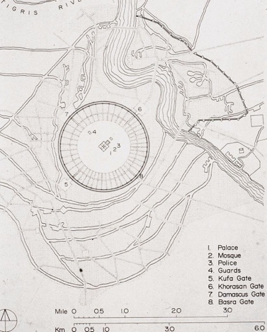

Legend has it that the great city of al-Zawra’ would be erected by a king named Miqlas between the Tigris and the Diyala rivers.1 No city stood there until 762 CE when caliph al-Mansour sought to move the caliphate.2 Upon hearing the legend of al-Zawra’ from a doctor, caliph al-Mansour recalled that his childhood nickname was Miqlas and began constructing the new crown jewel of the Islamic world: Baghdad. Located at the confluence of two rivers and far away from the tumult of uprising against the Abbasid Empire in the west, Baghdad, or al-Zawra’, commanded authority, reverence, and plentiful trade.3 By establishing Baghdad as the capital of the Islamic world, caliph al-Mansour cemented the caliphate’s influence.

The caliphate gave life to Baghdad. Al-Mansour brought in 100,000 laborers, a city in themselves, to build the great stone and marble walls of Baghdad, the exterior of which measured 40 feet wide and 90 feet high.5 Inside the walls stood great mosques, administrative and military buildings, and al-Mansour’s palace, all filled with well-off denizens on the caliph’s payroll.6 Caliph al-Mansour built himself a circular palace with a magnificent dome in the center of his round city, which had a significantly higher building cost.7 Caliph al-Mansour established the power and importance of the caliphate through Baghdad’s symbolism, luxury, and spontaneous erection.
Due to its prime location along trade routes and the excesses of its bureaucracy, Baghdad soon grew to be a center of trade. Goods from across Afro-Eurasia poured into its markets, enriching merchants, outfitting Abbasid officials with indulgent goods, and supporting the economy of the surrounding area.8 Consequently, news of the city’s magnificence reached far and wide, increasing the caliphate’s sway. The city soon expanded as immigrants arrived and the bazaar moved outside of its walls.9 Within a few decades, Baghdad transformed into a metropolis home to an estimated million people.10 The people of Baghdad constructed many mosques, with some historians claiming the existence of tens of thousands.11 The city’s growth exceeded al-Mansour’s expectations, as no plans existed for dwellings beyond the walls. 12 The caliphate profited from the newfound growth, observing an increase in influence as Baghdad’s prosperity swelled.
More significant than the city’s material wealth, however, was its curated cornucopia of knowledge. Baghdad’s distinctive wealth of libraries, books, and scholars differentiated it from other urban centers. In line with Islamic beliefs, the caliphs of the Abbasid Empire patronized astounding intellectual pursuits, recruiting scholars from around Afro-Eurasia to the great libraries of Baghdad.13 Tens of thousands of students studied in Baghdad at the largest university of the time.14 During the scholarly golden age in Baghdad, Caliph al-Mamun paid scholars in gold for the ancient works they painstakingly translated into distinctive Arabic scripts.15 He established the storied Darul Hukama, or the House of Wisdom, which housed a school, a library, and a translation center. 16 Scholarly institutions such as the House of Wisdom catalyzed the many scientific discoveries that emerged from Baghdad at the time.17 Thus, the caliphate’s support and funding of scholars transformed Baghdad into the center of wisdom and learning in the Islamic world.
Over the course of mere decades, the caliphate converted the land in between two rivers into the center of Islamic trade, learning, and symbolic power. The knowledge gained from Baghdad’s scholarly pursuits induced countless scientific discoveries and translations by Baghdadi scholars are still in use to this day. The movement of the Abbasid Caliphate to Baghdad brought about a period of prosperity renowned across the Islamic world. One could certainly say that Caliph al-Mansour fulfilled the legend of legend of al-Zawra’, positioning Baghdad and the caliphate as the true center of the Abbasid Empire.
Bibliography
"Abbasid Dynasty." In Britannica Concise Encyclopedia, 0 ed., edited by Encyclopaedia Britannica. Chicago, IL, USA: Britannica Digital Learning, 2017. Credo Reference.
"Baghdad: City Plan." JSTOR. https://jstor.org/stable/community.13907678.
Beckwith, Christopher I. "THE PLAN of THE CITY of PEACE: CENTRAL ASIAN IRANIAN FACTORS in EARLY 'ABBÂSID DESIGN." Acta Orientalia Academiae Scientiarum Hungaricae 38, no. 1/2 (1984): 143-64. JSTOR.
"Caliph." In Britannica Concise Encyclopedia, 0 ed., edited by Encyclopaedia Britannica. Chicago, IL, USA: Britannica Digital Learning, 2017. Credo Reference.
"Caliphate." In Encyclopedia of World Religions: Encyclopedia of Islam, 2nd ed., edited by Juan E. Campo. New York, NY, USA: Facts On File, 2016. Credo Reference.
D. G. Tor. "The Political Revival of the Abbasid Caliphate: Al-Muqtafī And the Seljuqs." Journal of the American Oriental Society 137, no. 2 (2017): 301-14. https://doi.org/10.7817/jameroriesoci.137.2.0301.
Goodwin, Jason. "The Glory That Was Baghdad." The Wilson Quarterly (1976-) 27, no. 2 (2003): 24-28. JSTOR.
Grady, James, A. "Baghdad during the Middle Ages." In World History: A Comprehensive Reference Set, edited by Facts on File. New York, NY, USA: Facts On File, 2016. Credo Reference.
Hassan, Mona. "Baghdad." In Encyclopedia of Islam and the Muslim World, edited by Richard C. Martin. Farmington, MI, USA: Gale, 2016. Credo Reference.
"Islam in Baghdad." In Encyclopedia of World Religions: Encyclopedia of Islam, 2nd ed., edited by Juan E. Campo. New York, NY, USA: Facts On File, 2016. Credo Reference.
Lange, Christian, Vahid Behmardi, C. Edmund Bosworth, Massimo Campanini, David Durand-Guédy, Daphna Ephrat, Robert Gleave, Carole Hillenbrand, Robert Hillenbrand, Songül Mecit, Jürgen Paul, A. C. S. Peacock, Scott Redford, D. G. Tor, and Vanessa Van Renterghem. The Seljuqs : Politics, Society and Culture. Edinburgh, United Kingdom: Edinburgh University Press, 2022. ProQuest Ebook Central.
Lassner, Jacob. "THE CALIPH'S PERSONAL DOMAIN: THE CITY PLAN of BAGHDAD REEXAMINED." Kunst Des Orients 5, no. 1 (1968): 24-36. JSTOR.
"Libraries and Bookshops." In 1001 Inventions: The Enduring Legacy of Muslim Civilization, 3rd ed., edited by Salim T. S Al-Hassani. Washington, DC, USA: National Geographic Society, 2012. Credo Reference.
Mackensen, Ruth Stellhorn. "Four Great Libraries of Medieval Baghdad." The Library Quarterly: Information, Community, Policy 2, no. 3 (1932): 279-99. JSTOR.
Moore, Lyndon. "Baghdad." In The Oxford Encyclopedia of Economic History, edited by Joel Mokyr. Vol. 1. New York, NY: Oxford University Press, 2003.
Oleschuk, Samantha. "Architectural Site and Imagined Landscape: The Foundation Lore and Perpetuated Mythology of the Round City of Baghdad." Aisthesis: The Interdisciplinary Honors Journal 14, no. 1 (2023). Accessed April 25, 2024. https://pubs.lib.umn.edu/index.php/aisthesis/article/view/5304. Samantha Oleschuk is an undergraduate at Appalachian University. This article informed me about the construction of Baghdad and its architectural significance.
Salisbury, Joyce E. "Science in the Islamic World: Medieval World." Daily Life through History. Last modified 2024. https://dailylife2.abc-clio.com/Search/ Display/1425943.
Salisbury, Joyce E. "Baghdad: Medieval World." Daily Life through History. Last modified 2024. https://dailylife2.abc-clio.com/Search/Display/1426155.
Unknown. "Map of the the Islamic World, 1250-1500." JSTOR. https://jstor.org/ stable/community.12186762.
Wani, Zahid Ashraf, and Tabasum Maqbol. "The Islamic Era and Its Importance to Knowledge and the Development of Libraries." Library Philosophy and Practice, April 2012. Gale Academic OneFile Select.
Acknowledgments
With the help of Rhine Peng and Chloe Rhee from the writing center. I’m also grateful for the advice and counsel of Ms. Frey. I’m thankful for the help with peer editing from Aimee Qi and Maxwell Langhorst.